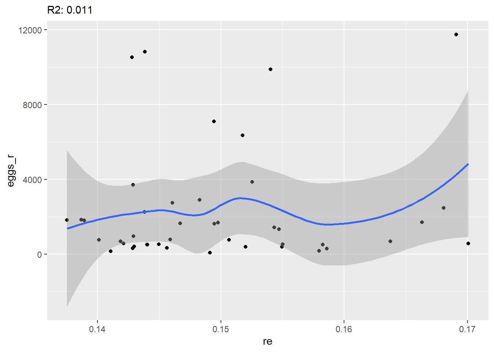
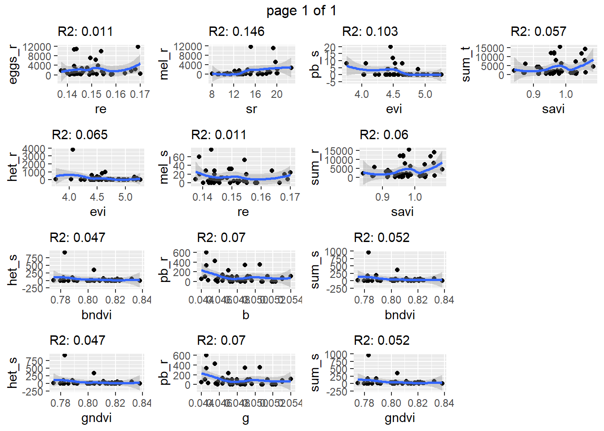

# Loading packages
library(tidyverse) # for data wrangling and plotting
library(janitor) # clean column names
library(knitr) # for figure displayingIteration
Learning objectives
Today’s learning objectives are to:
- Understand the need for iteration and automation
- Explore three different approaches to iteration and automation:
- function writing
- loops
- list mapping
- function writing
Introduction
This exercise is adapted from the analysis performed in the paper Santos, Bastos, et al. (2022). Identifying Nematode Damage on Soybean through Remote Sensing and Machine Learning Techniques, https://www.mdpi.com/2073-4395/12/10/2404.
This study evaluated the potential to predict different nematode counts using drone-based remote sensing metrics in soybeans.
A total of 43 georeferenced soil and plant samples were collected from a field grown with soybeans and known to be previously infested with different nematode species. 
Soil and soybeans root material from each sampling point were analyzed in a laboratory for different nematode species, including:
- Meloidogyne incognita (mel)
- Pratylenchus brachyurus (pb)
- Heterodera glycines (het)
On the same day that the soil and plant samples were collected, a drone-mounted multispectral sensor was also flown over the field.
Imagery data was extracted from each point where soil and plant samples were taken. Imagery data included reflectance in the bands of
- red (r),
- green (g),
- blue (b),
- near-infrared (nir),
- red-edge (re)
Tasks
Our goal with this data is to:
- Calculate different vegetation indices using the bands
- For each of the nematode variables, run all possible combinations of bivariate regression models, with each band and vegetation index as the single explanatory variable.
For ex:
number of Meloidogyne incognita nematode in the roots ~ reflectance on the green band
We have a total of:
- response variable: 10 nematode-related variables
- explanatory variables: 5 bands + 10 vegetation indices
- total models: 10 x 15 = 150 models
1) Setup
Here is where we load the packages we will use.
Reading data.
nematode <- read_csv("../data/03_nematode_rs.csv")
nematode# A tibble: 43 × 18
site sampleid mel_s pb_s het_s sum_s mel_r pb_r het_r sum_r sum_t
<chr> <dbl> <dbl> <dbl> <dbl> <dbl> <dbl> <dbl> <dbl> <dbl> <dbl>
1 a 1 32 0 0 32 1402. 0 7.27 1482. 1514.
2 a 2 28 0 0 28 1410 50 8 1630. 1658.
3 a 3 24 0 28 52 466. 114. 13.7 1169. 1221.
4 a 4 20 0 20 40 537. 105. 0 1042. 1082.
5 a 5 28 0 0 28 11143. 0 0 11829. 11857.
6 a 6 8 0 48 56 2154. 57.1 171. 14140 14196
7 a 7 4 0 12 16 1685. 107. 26.7 11712 11728
8 a 8 0 0 0 0 242. 12.5 6.25 439. 439.
9 a 9 4 0 20 24 800 0 27.6 7190. 7214.
10 a 10 20 0 28 48 5160 85.7 343. 8067. 8115.
# ℹ 33 more rows
# ℹ 7 more variables: eggs_r <dbl>, yield_kgha <dbl>, b <dbl>, g <dbl>,
# nir <dbl>, r <dbl>, re <dbl>2) EDA
summary(nematode) site sampleid mel_s pb_s
Length:43 Min. : 1.00 Min. : 0.00 Min. : 0.00
Class :character 1st Qu.:11.50 1st Qu.: 0.00 1st Qu.: 0.00
Mode :character Median :22.00 Median : 8.00 Median : 0.00
Mean :22.47 Mean :13.86 Mean : 1.86
3rd Qu.:33.50 3rd Qu.:20.00 3rd Qu.: 0.00
Max. :45.00 Max. :76.00 Max. :20.00
het_s sum_s mel_r pb_r
Min. : 0.00 Min. : 0.00 Min. : 0.00 Min. : 0.00
1st Qu.: 0.00 1st Qu.: 4.00 1st Qu.: 64.24 1st Qu.: 12.92
Median : 4.00 Median : 20.00 Median : 232.73 Median : 60.00
Mean : 41.77 Mean : 57.49 Mean : 1137.66 Mean : 94.68
3rd Qu.: 20.00 3rd Qu.: 36.00 3rd Qu.: 1101.09 3rd Qu.:102.63
Max. :920.00 Max. :952.00 Max. :11660.00 Max. :600.00
het_r sum_r sum_t eggs_r
Min. : 0.000 Min. : 405.0 Min. : 405 Min. : 72.73
1st Qu.: 3.125 1st Qu.: 945.4 1st Qu.: 980 1st Qu.: 502.00
Median : 26.667 Median : 1764.7 Median : 1769 Median : 953.33
Mean : 196.746 Mean : 3759.6 Mean : 3817 Mean : 2330.54
3rd Qu.: 64.103 3rd Qu.: 5162.3 3rd Qu.: 5244 3rd Qu.: 2364.29
Max. :3803.636 Max. :15510.0 Max. :15526 Max. :11757.14
yield_kgha b g nir
Min. : 417.5 Min. :0.04396 Min. :0.04396 Min. :0.3653
1st Qu.: 857.0 1st Qu.:0.04642 1st Qu.:0.04642 1st Qu.:0.4223
Median :1267.2 Median :0.04804 Median :0.04804 Median :0.4407
Mean :1183.0 Mean :0.04826 Mean :0.04826 Mean :0.4511
3rd Qu.:1501.6 3rd Qu.:0.04952 3rd Qu.:0.04952 3rd Qu.:0.4829
Max. :1948.4 Max. :0.05399 Max. :0.05399 Max. :0.5767
r re
Min. :0.02421 Min. :0.1375
1st Qu.:0.02922 1st Qu.:0.1429
Median :0.03258 Median :0.1483
Mean :0.03300 Mean :0.1497
3rd Qu.:0.03695 3rd Qu.:0.1545
Max. :0.04534 Max. :0.1701 nematode %>%
pivot_longer(cols = mel_s: re) %>%
ggplot(aes(x = value)) +
geom_density() +
facet_wrap(~name, scales = "free" )
3) Function writing - ndvi
The first step will be to calculate 10 different vegetation indices.
Vegetation indices represent different ways of combining reflectance data from different bands. One of the main formats of vegetation indices is the normalized difference vegetation index, that takes the form of:
\[ ndvi = \dfrac{(nir - vis)}{(nir + vis)}\] where nir is reflectance from the near-infrared band, and vis is reflectance from any band from the visible region (blue, red, green, red-edge).
One example of creating ndvi for the nir and red bands would be:
nematode %>%
mutate(rndvi = (nir - r)/(nir + r))# A tibble: 43 × 19
site sampleid mel_s pb_s het_s sum_s mel_r pb_r het_r sum_r sum_t
<chr> <dbl> <dbl> <dbl> <dbl> <dbl> <dbl> <dbl> <dbl> <dbl> <dbl>
1 a 1 32 0 0 32 1402. 0 7.27 1482. 1514.
2 a 2 28 0 0 28 1410 50 8 1630. 1658.
3 a 3 24 0 28 52 466. 114. 13.7 1169. 1221.
4 a 4 20 0 20 40 537. 105. 0 1042. 1082.
5 a 5 28 0 0 28 11143. 0 0 11829. 11857.
6 a 6 8 0 48 56 2154. 57.1 171. 14140 14196
7 a 7 4 0 12 16 1685. 107. 26.7 11712 11728
8 a 8 0 0 0 0 242. 12.5 6.25 439. 439.
9 a 9 4 0 20 24 800 0 27.6 7190. 7214.
10 a 10 20 0 28 48 5160 85.7 343. 8067. 8115.
# ℹ 33 more rows
# ℹ 8 more variables: eggs_r <dbl>, yield_kgha <dbl>, b <dbl>, g <dbl>,
# nir <dbl>, r <dbl>, re <dbl>, rndvi <dbl>Since we’re going to calculate this for each of the visible-region bands (5 in total), let’s write a function so we avoid some code repetition.
ndvi <- function(nir, vis) {
(nir - vis)/(nir + vis)
}The function name is ndvi. It takes 2 arguments:
- nir: a vector with data on the near-infrared reflectance
- vis: a vector with data on one of the visible bands reflectance
The function returns a vector with the result of the ndvi calculation using the specific nir and visibile band information provided.
Let’s see how that would compare to the previous step:
nematode %>%
mutate(rndvi = ndvi(nir, r))# A tibble: 43 × 19
site sampleid mel_s pb_s het_s sum_s mel_r pb_r het_r sum_r sum_t
<chr> <dbl> <dbl> <dbl> <dbl> <dbl> <dbl> <dbl> <dbl> <dbl> <dbl>
1 a 1 32 0 0 32 1402. 0 7.27 1482. 1514.
2 a 2 28 0 0 28 1410 50 8 1630. 1658.
3 a 3 24 0 28 52 466. 114. 13.7 1169. 1221.
4 a 4 20 0 20 40 537. 105. 0 1042. 1082.
5 a 5 28 0 0 28 11143. 0 0 11829. 11857.
6 a 6 8 0 48 56 2154. 57.1 171. 14140 14196
7 a 7 4 0 12 16 1685. 107. 26.7 11712 11728
8 a 8 0 0 0 0 242. 12.5 6.25 439. 439.
9 a 9 4 0 20 24 800 0 27.6 7190. 7214.
10 a 10 20 0 28 48 5160 85.7 343. 8067. 8115.
# ℹ 33 more rows
# ℹ 8 more variables: eggs_r <dbl>, yield_kgha <dbl>, b <dbl>, g <dbl>,
# nir <dbl>, r <dbl>, re <dbl>, rndvi <dbl>Now that we created a function to help with one type of vegetation index, let’s go ahead and compute all 10 different ones.
nematode_w <- nematode %>%
# Calculating ndvi-based indices
mutate(rndvi = ndvi(nir, r),
gndvi = ndvi(nir, g),
bndvi = ndvi(nir, b),
rendvi = ndvi(nir, re)
) %>%
# Calculating other non-ndvi-based indices
# For reference, see paper.
mutate(sr = nir/r,
rdvi = ((nir-r)/(nir+r))^2,
savi = (((1+0.5)*(nir-r))/(nir+r+0.16)),
vari = (g-r)/(g+r-b),
evi = 2.5*(nir-r)/(nir+(6*r)-(7.5*b))+1,
nli= ((nir^2)-r)/((nir^2)+r))
nematode_w # A tibble: 43 × 28
site sampleid mel_s pb_s het_s sum_s mel_r pb_r het_r sum_r sum_t
<chr> <dbl> <dbl> <dbl> <dbl> <dbl> <dbl> <dbl> <dbl> <dbl> <dbl>
1 a 1 32 0 0 32 1402. 0 7.27 1482. 1514.
2 a 2 28 0 0 28 1410 50 8 1630. 1658.
3 a 3 24 0 28 52 466. 114. 13.7 1169. 1221.
4 a 4 20 0 20 40 537. 105. 0 1042. 1082.
5 a 5 28 0 0 28 11143. 0 0 11829. 11857.
6 a 6 8 0 48 56 2154. 57.1 171. 14140 14196
7 a 7 4 0 12 16 1685. 107. 26.7 11712 11728
8 a 8 0 0 0 0 242. 12.5 6.25 439. 439.
9 a 9 4 0 20 24 800 0 27.6 7190. 7214.
10 a 10 20 0 28 48 5160 85.7 343. 8067. 8115.
# ℹ 33 more rows
# ℹ 17 more variables: eggs_r <dbl>, yield_kgha <dbl>, b <dbl>, g <dbl>,
# nir <dbl>, r <dbl>, re <dbl>, rndvi <dbl>, gndvi <dbl>, bndvi <dbl>,
# rendvi <dbl>, sr <dbl>, rdvi <dbl>, savi <dbl>, vari <dbl>, evi <dbl>,
# nli <dbl>4) Function writing - CV
Now, let’s say we wanted to write a function to obtain some statistical summary metrics for each of the new variables we calculated.
Let’s write a function to return to us the mean and coefficient of variation. If you recall, there is no function for CV in R, so let’s also create that.
First, a function for CV.
meancv <- function(x) {
# Calculate intermediary steps of mean and sd
mean <- mean (x, na.rm = T)
sd <- sd(x, na.rm = T)
# Calculate cv
cv <- (sd/mean)*100
# Combine them into a data frame
df <- data.frame(mean = mean,
cv = cv
)
# Return the data frame
return(df)
}
meancvfunction (x)
{
mean <- mean(x, na.rm = T)
sd <- sd(x, na.rm = T)
cv <- (sd/mean) * 100
df <- data.frame(mean = mean, cv = cv)
return(df)
}Let’s apply it to one of the vegetation indices
meancv(nematode_w$rndvi) mean cv
1 0.8611419 3.7508675) Loops
Different types of loops exist, with for and while loops being the most popular.
A for loop iterates through positions in a vector and apply the same task to each position, returning a result for each of them.
Now, let’s say I wanted to calculate the mean and CV for each of the response and explanatory variable columns in our data set.
Since we will be performing the same task across many columns, we could create a loop where, for each column,
- we apply the function meancv, - the function returns back the mean and CV, - the loop appends all the results together
Loops are very useful when repeating the same task across different scenarios.
In this case, the task being repeated is to calculate mean and CV, and the different scenarios are the columns.
nematode_w# A tibble: 43 × 28
site sampleid mel_s pb_s het_s sum_s mel_r pb_r het_r sum_r sum_t
<chr> <dbl> <dbl> <dbl> <dbl> <dbl> <dbl> <dbl> <dbl> <dbl> <dbl>
1 a 1 32 0 0 32 1402. 0 7.27 1482. 1514.
2 a 2 28 0 0 28 1410 50 8 1630. 1658.
3 a 3 24 0 28 52 466. 114. 13.7 1169. 1221.
4 a 4 20 0 20 40 537. 105. 0 1042. 1082.
5 a 5 28 0 0 28 11143. 0 0 11829. 11857.
6 a 6 8 0 48 56 2154. 57.1 171. 14140 14196
7 a 7 4 0 12 16 1685. 107. 26.7 11712 11728
8 a 8 0 0 0 0 242. 12.5 6.25 439. 439.
9 a 9 4 0 20 24 800 0 27.6 7190. 7214.
10 a 10 20 0 28 48 5160 85.7 343. 8067. 8115.
# ℹ 33 more rows
# ℹ 17 more variables: eggs_r <dbl>, yield_kgha <dbl>, b <dbl>, g <dbl>,
# nir <dbl>, r <dbl>, re <dbl>, rndvi <dbl>, gndvi <dbl>, bndvi <dbl>,
# rendvi <dbl>, sr <dbl>, rdvi <dbl>, savi <dbl>, vari <dbl>, evi <dbl>,
# nli <dbl>Let’s create a for loop to do that for us.
First, let’s create an empty data frame scaffold to be populated by the results of the loop.
nematode_meancv <- data.frame(variable = rep(NA, 26),
mean = rep(NA, 26),
cv = rep(NA, 26)
)
nematode_meancv variable mean cv
1 NA NA NA
2 NA NA NA
3 NA NA NA
4 NA NA NA
5 NA NA NA
6 NA NA NA
7 NA NA NA
8 NA NA NA
9 NA NA NA
10 NA NA NA
11 NA NA NA
12 NA NA NA
13 NA NA NA
14 NA NA NA
15 NA NA NA
16 NA NA NA
17 NA NA NA
18 NA NA NA
19 NA NA NA
20 NA NA NA
21 NA NA NA
22 NA NA NA
23 NA NA NA
24 NA NA NA
25 NA NA NA
26 NA NA NAEach row above will be populated with the name of the variable, its mean and cv.
for(i in 3:ncol(nematode_w)) {
# Getting the name of all columns
colnames <- colnames(nematode_w)
# Defining the name of the variable being analyzed in a given loop step
varname <- colnames [i]
# Calculating mean and cv
statsum <- meancv(nematode_w[[i]])
# Appending results to the empty data frame
nematode_meancv$variable[[i-2]] <- varname
nematode_meancv$mean[[i-2]] <- statsum$mean
nematode_meancv$cv[[i-2]] <- statsum$cv
# Print a message
print(paste("Finished with variable", varname))
}[1] "Finished with variable mel_s"
[1] "Finished with variable pb_s"
[1] "Finished with variable het_s"
[1] "Finished with variable sum_s"
[1] "Finished with variable mel_r"
[1] "Finished with variable pb_r"
[1] "Finished with variable het_r"
[1] "Finished with variable sum_r"
[1] "Finished with variable sum_t"
[1] "Finished with variable eggs_r"
[1] "Finished with variable yield_kgha"
[1] "Finished with variable b"
[1] "Finished with variable g"
[1] "Finished with variable nir"
[1] "Finished with variable r"
[1] "Finished with variable re"
[1] "Finished with variable rndvi"
[1] "Finished with variable gndvi"
[1] "Finished with variable bndvi"
[1] "Finished with variable rendvi"
[1] "Finished with variable sr"
[1] "Finished with variable rdvi"
[1] "Finished with variable savi"
[1] "Finished with variable vari"
[1] "Finished with variable evi"
[1] "Finished with variable nli"Let’s inspect nematode_meancv
nematode_meancv variable mean cv
1 mel_s 1.386047e+01 124.581789
2 pb_s 1.860465e+00 221.797312
3 het_s 4.176744e+01 353.999570
4 sum_s 5.748837e+01 266.650108
5 mel_r 1.137665e+03 219.496149
6 pb_r 9.468253e+01 138.146809
7 het_r 1.967460e+02 306.447522
8 sum_r 3.759632e+03 113.571829
9 sum_t 3.817121e+03 111.844638
10 eggs_r 2.330539e+03 133.919891
11 yield_kgha 1.183034e+03 32.627630
12 b 4.826377e-02 5.310528
13 g 4.826377e-02 5.310528
14 nir 4.511232e-01 10.691154
15 r 3.299555e-02 15.632113
16 re 1.497228e-01 5.716278
17 rndvi 8.611419e-01 3.750867
18 gndvi 8.054609e-01 1.925507
19 bndvi 8.054609e-01 1.925507
20 rendvi 4.997917e-01 4.878113
21 sr 1.418497e+01 25.095507
22 rdvi 7.425845e-01 7.433970
23 savi 9.701447e-01 5.799847
24 vari 4.987910e-01 51.190721
25 evi 4.634529e+00 7.329317
26 nli 7.109428e-01 11.9813016) List mapping
Another way of doing iteration is through mapping a function to different components of a list.
We can do that with the package purrr and some of its functions:
- map(x) functions take one iterating element, x
- map2(x, y) functions take two iterating elements, x and y
- pmap(x, y, ..., n) functions take n iterating elements
One way of working with these functions is with the combo group_by() + nest() to create the iterating data frames, followed by mutate() and map() to apply a given function to each iterating piece.
Let’s see that in practice.
The goal of the next chunk is to run linear models of the type y ~ x, where y is one of the response variables (we have a total of 10) and x is one of the explanatory variables (we have a total of 15).
In the end, we will have 150 models, and I would like to keep only the one with the greatest R2 for each response variable.
This approach creates a bit of a brain-twist, since we are creating data sets (and other object types) inside of the initial data set.
nematode_mods <- nematode_w %>%
# Pivotting longer for the response variables
pivot_longer(cols = mel_s:eggs_r,
names_to = "resp_var",
values_to = "resp_val"
) %>%
# Pivotting longer for the explanatory variables
pivot_longer(cols = b:nli,
names_to = "exp_var",
values_to = "exp_val"
) %>%
arrange(resp_var, exp_var) %>%
# Creating groups of resp_var and exp_var
group_by(resp_var, exp_var) %>%
nest() %>%
# Applying linear model to each element
mutate(lm = map(data,
~lm(resp_val ~ exp_val,
data = .x
)
)) %>%
mutate(r2 = map(lm,
~summary(.x)$r.squared
))
# Extracting R2 for each element
nematode_mods$r2[1][[1]]
[1] 0.003005519Above we used the map() function because we only had one iterating element (i.e., data).
Now, let’s unnest the r2 values, then only keep the largest r2 for each response variable, and make some plots.
nematode_mods_sel <- nematode_mods %>%
unnest(r2) %>%
group_by(resp_var) %>%
filter(r2 == max(r2))
nematode_mods_sel# A tibble: 13 × 5
# Groups: resp_var [10]
resp_var exp_var data lm r2
<chr> <chr> <list> <list> <dbl>
1 eggs_r re <tibble [43 × 5]> <lm> 0.0108
2 het_r evi <tibble [43 × 5]> <lm> 0.0651
3 het_s bndvi <tibble [43 × 5]> <lm> 0.0474
4 het_s gndvi <tibble [43 × 5]> <lm> 0.0474
5 mel_r sr <tibble [43 × 5]> <lm> 0.146
6 mel_s re <tibble [43 × 5]> <lm> 0.0107
7 pb_r b <tibble [43 × 5]> <lm> 0.0700
8 pb_r g <tibble [43 × 5]> <lm> 0.0700
9 pb_s evi <tibble [43 × 5]> <lm> 0.103
10 sum_r savi <tibble [43 × 5]> <lm> 0.0602
11 sum_s bndvi <tibble [43 × 5]> <lm> 0.0521
12 sum_s gndvi <tibble [43 × 5]> <lm> 0.0521
13 sum_t savi <tibble [43 × 5]> <lm> 0.0572nematode_mods_sel_plots <- nematode_mods_sel %>%
# Making scatterplots with r2 in subtitle
mutate(splot = map2(data, r2,
~ggplot(dat = .x,
aes(x = exp_val,
y = resp_val)
) +
geom_point() +
geom_smooth(method = "lm") +
labs(subtitle = paste("R2:", round(.y, 3))
)
)) %>%
# Making scatterplots with r2 in subtitle, and correct x and y axis titles
mutate(splot_better = pmap(list(.df = data,
.r2 = r2,
.rv = resp_var,
.ev = exp_var),
function(.df, .r2, .rv, .ev)
ggplot(data = .df,
aes(x = exp_val,
y = resp_val
)) +
geom_point() +
geom_smooth() +
labs(subtitle = paste("R2:",
round(.r2, 3)),
x = .ev,
y = .rv
)
))
nematode_mods_sel_plots$splot_better[1][[1]]`geom_smooth()` using method = 'loess' and formula = 'y ~ x'
Now, we had 2 iterating elements to create splot, so we needed to use map2().
Also, with more than 2 iterating elements to create splot_better, we used the function pmap() which accepts as many elements as needed.
Let’s print the first plot:
nematode_mods_sel_plots$splot_better[1][[1]]`geom_smooth()` using method = 'loess' and formula = 'y ~ x'
Now, let’s print all of the plots
library(gridExtra)Finally, let’s save all these plots as one figure.
#install.packages("gridExtra")
library(gridExtra)
allplots <- gridExtra::marrangeGrob(nematode_mods_sel_plots$splot_better,
ncol = 4, nrow = 4
)`geom_smooth()` using method = 'loess' and formula = 'y ~ x'
`geom_smooth()` using method = 'loess' and formula = 'y ~ x'
`geom_smooth()` using method = 'loess' and formula = 'y ~ x'
`geom_smooth()` using method = 'loess' and formula = 'y ~ x'
`geom_smooth()` using method = 'loess' and formula = 'y ~ x'
`geom_smooth()` using method = 'loess' and formula = 'y ~ x'
`geom_smooth()` using method = 'loess' and formula = 'y ~ x'
`geom_smooth()` using method = 'loess' and formula = 'y ~ x'
`geom_smooth()` using method = 'loess' and formula = 'y ~ x'
`geom_smooth()` using method = 'loess' and formula = 'y ~ x'
`geom_smooth()` using method = 'loess' and formula = 'y ~ x'
`geom_smooth()` using method = 'loess' and formula = 'y ~ x'
`geom_smooth()` using method = 'loess' and formula = 'y ~ x'allplots
7) Summary
In this exercise, we:
- created two functions to simplify creating ndvi and cv
- iterated through the calculation of mean and cv using a for loop
- iterated through 150 sets of data to create 150 models using map
- selected best models, plotted (using map2() and pmap()), and exported to file